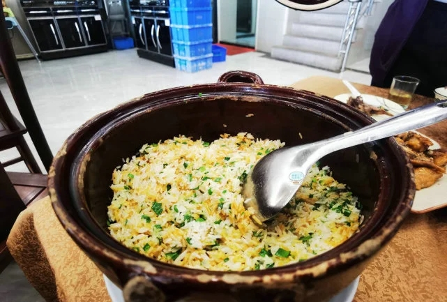

何仙姑故里，掛綠荔枝鄉。
荔鄉承仙澤，仙姑賜掛綠
增城建县于东汉建安六年（公元201年），隶属南海郡，至今已有一千八百多年历史。其名一说取自《淮南子》“昆仑山有增城九重”之仙境，亦有源于增江或“增设一城”之说，皆为此地平添几分传奇底色。 作为八仙中唯一的女仙何仙姑的故乡，增城小楼镇仙桂村至今保留着清咸丰年间重修的何仙姑家庙，庙侧“仙源涓涓，饮者万年”的古井，诉说着唐代少女何秀姑食云母、拒婚飞升的传说。这份仙气，亦幻化为荔枝珍品挂绿——相传仙姑遗落的一根绿丝线，缠绕果上，成就了“红紫相间，一绿线直贯到底”的西园挂绿母树，使其成为增城独有的文化图腾。 今日增城，处处皆景。你可前往何仙姑文化旅游区寻仙踪，到挂绿广场瞻仰那株价值连城的母树；亦可登临白水寨风景名胜区，看中国大陆落差最大的瀑布——白水仙瀑从428.5米高空倾泻而下，传说这正是何仙姑不舍故土化身的白练。若逢初夏，漫山遍野的荔枝红透，除了珍贵的挂绿，更有糯米糍、桂味等佳品待君品尝；秋冬时节，增城迟菜心、丝苗米香气四溢，邀您体验“中国丝苗米之乡”的舌尖盛宴。 从千年古邑的厚重，到仙姑传说的飘逸，再到山水田园的馈赠，增城正以“仙姑故里，挂绿原乡”的热情，恭候您的到来。
食在增城：朱村鷄飯

——這一鍋朱村雞飯，是增城人守了百年“味覺密碼”。
朱村雞飯的故事，始於清末朱村的萬畝稻田。相傳朱村有一貧苦人家之子要出門趕考，鄉鄰籌措盤纏相助。其母為答謝眾人，將家中僅有的雞宰殺切碎，加醬油蔥花調味，置於煮開的米飯上焗熟。米飯出鍋時雞香撲鼻，這道充滿鄉情的“送行之宴”從此在朱村紮了根。
另一個更接地氣的說法，出自朱村萬畝田的“睇田佬”（看水人）。農忙通宵守水，最頂肚的莫過於煮個味飯——捉一隻家養走地雞，斬件下鹽醬油薑絲，等大鍋米煮到起飯眼，連雞帶油倒進去焗一焗。深夜田基上，幾個人圍坐，每人扒上幾大碗，舒坦至極。“睇田佬”的一鍋雞飯，就這樣在田埂間飄香了上百年。
從鄉間灶頭到官方認證，這煲飯見證的，是增城人對「吃雞」這件事的極致講究。
一煲飯的靈魂：雞中有飯香，飯中有雞味
朱村雞飯世代相傳的十字真言——“雞中有飯香，飯中有雞味”，靠的是實打實的硬功夫。
- 雞要鮮
- 米要靚
- 煮要慢
必須是增城本地農家走地雞，肉質緊實，雞味濃郁。斬件後先以純正花生油撈勻，過幾分鐘再加鹽、豉油、薑絲，少許生粉鎖住嫩滑。
必須是正宗增城絲苗米——米粒纖細、晶瑩如玉，被譽為「米中碧玉」，是廣府煲仔飯的靈魂伴侶。
現點現做，至少等待30分鐘——這在快餐時代近乎「任性」。
揭蓋瞬間，香氣撲鼻。
- 米飯金黃乾身，粒粒分明，每一粒都裹著雞油的光澤，卻無油膩負擔；
- 雞肉鮮嫩不柴，咬下去滿口肉汁；
- 鍋底那層金黃鍋巴，酥脆噴香，是老食客必搶的精華；
- 蔥花一撒，淋上特製醬油，包你食過尋返味。
“半隻雞肉配一鍋飯，直接啖完五碗不是夢。”有食客這樣形容。1994年，一位副廳長受邀到朱村吃雞飯，一桌廣州食客讚不絕口，幾位年輕女子平時很少吃超過一碗飯，那日竟都扒了兩三碗——臨走，廳長夫人還把沒吃完的雞飯連飯焦一併打包帶走。
來增城，訪何仙姑家廟，嘗掛綠荔枝，再赴朱村——等一煲雞飯30分鐘，換一口百年煙火。這份需要等待的美味，恰恰是預製菜時代最稀缺的誠意。
朱村雞飯，一碗飯裡的鄉愁，等你來嘗。
推薦朱村鷄飯飯店
Tips:節假日、休息日以及周五至周日，為用餐高峰期，出發前記得提前同餐廳前臺預約好用餐位置。
- 香賓雞飯（朱村店）
- 品裕酒家·絲苗米雞飯（朱村店）
- 粵香酒家（朱村店）
🏠 廣州市增城區朱村街266號
🚇 21號線朱村站C口 步行約60米
☎ 020-82854352 / 13527822703
🕘 營業時間：09:00-21:00
🏠 廣州市增城區朱村大道中278號
🚇 21號線朱村站D出口（步行約110米）
☎ 020-82854260 / 18102728448
🕘 營業時間：09:00-21:00（套餐活動期間午市11:00-14:00，晚市17:00-21:00）
🏠 廣州市增城區朱村街朱村大道中258號
🚇 21號線朱村站C口旁（步行約199米，2分鐘）
☎ 020-82854280
🕘 營業時間：11:00-14:00，17:00-21:00